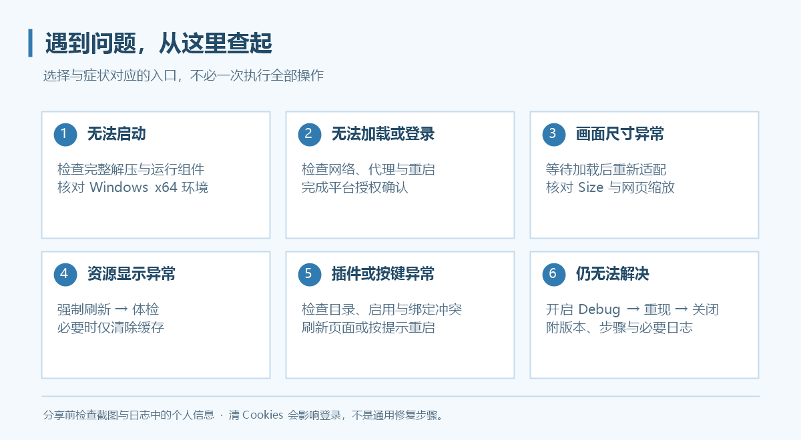

常见问题
先查看对应功能页。涉及网络时先检查连接和重启状态，涉及画面时先尝试重新适配或强制刷新。

安装与启动
便携版为什么也提示缺少组件？
便携版免去程序安装步骤，仍依赖 .NET 10、Windows App SDK Runtime 2.5.1、Visual C++ 与 WebView2 的 x64 运行组件。按包内 Prerequisites.txt 和安装说明核对。
双击后没有窗口，或提示缺少文件怎么办？
确认压缩包已完整解压、同目录文件未丢失、运行组件架构正确。不要只搬走 EXE。若是更新后的问题，关闭所有旧实例，再用完整新目录启动。
有自动更新吗？
有。0.3.7 起支持启动检查和“更多 → 关于”中的手动检查、下载与安装确认；新版提醒还能跳过指定版本。详情见程序更新。不含更新功能的旧版需要先手动安装，仍可从 Releases下载。
登录问题
登录页打不开或一直回到登录页？
- 核对代理软件是否运行、代理地址与端口是否正确。
- 修改连接设置后重启 Grancypher。
- 确认登录平台和游戏页面都能通过该连接访问。
- 等待并完成登录确认，不要连续刷新或调整 Size。
- 仍然失败时开启 Debug，记录失败页面与完整复现步骤。
仅在明确需要重置登录资料时使用“仅清除 Cookies”；清除后可能需要重新登录。完整流程见第一次使用。
为什么换配置后要重新登录？
不同配置使用独立 Cookies。新建配置不复制旧登录资料，这是正常行为；“迁移当前配置”与“新建配置”的区别见多用户配置。
升级后看不到原来的登录和书签？
检查当前配置目录是否与旧版相同。新版默认根目录使用 Grancypher，不自动识别旧 GranblueBrowser 默认目录。可选择有效的已有配置，或分别还原用户配置和书签；备份文件不包含 Cookies。
画面与窗口
游戏右侧有空白或窗口宽度不合适？
等待加载完成后点击“重新适配游戏画面”。可关闭页面加载自动裁剪，但 Size 变化和手动按钮仍会适配。详见画面裁剪。
Ctrl + 滚轮缩放是否会记住？
会，主、副视图分别记忆，范围 50%–250%，不同配置独立保存。
分屏能登录两个账户吗？
同一配置的分屏共用 Cookies。使用账户菜单新建配置并打开独立实例，才能隔离登录资料。
太郎或悬浮书签为什么自动跑到另一侧？
“附属面板自动换边”默认开启，靠近屏幕边缘时选择空间较多的一侧。可在“设置 → 外观”关闭；关闭后允许部分面板超出屏幕。
设置窗口太大、按钮看不到？
检查“高分辨率优化”。它适配独立窗口与系统 DPI，和游戏网页缩放是不同设置。
脚本与快捷键
太郎打开了却没有实时更新？
实时桥接需要太郎窗口保持打开。检查插件是否启用、目录顶层是否有 manifest.json，并尝试重启；不同插件版本的兼容表现可能不同。
为什么部分油猴脚本无法使用？
目前只支持部分 Tampermonkey API。核对脚本元信息、文件位置、依赖地址与所需接口，例如 GM_xmlhttpRequest 未实现。修改文件后重新读取、保存并刷新网页。
为什么按右键不显示网页菜单？
默认未启用网页右键菜单，可在“设置 → 常规”开启。若右键已绑定快捷功能，浏览器区域优先执行该功能，需要改绑或删除。
鼠标还有更多侧键，可以绑定吗？
原生录入支持 Mouse4／Mouse5。其他侧键先在鼠标驱动里映射为键盘按键，再在快捷键设置中录入。
快捷键无法保存，或老板键无效？
检查重复组合、未完成条目、书签目标与系统保留组合。老板键必须包含修饰键且仅支持键盘；与其他程序全局热键冲突时更换组合。
缓存与数据
清缓存会退出登录吗？
“仅清除缓存”和“更新缓存 / 强制刷新”不删除 Cookies。“仅清除 Cookies”和“清除全部浏览器数据”可能需要重新登录，操作前核对按钮名称。
缓存为什么一直增长？
静态资源缓存没有固定容量上限，不自动清理正常历史版本。使用“管理缓存版本…”预览并删除不需要的版本；磁盘不足 2 GiB 时停止新增写入。
开启内存热缓存后，程序内存为什么超过设定额度？
32／64／128 MiB 只限制缓存资源内容，不包括 WebView2、程序界面、临时缓冲与其他对象；每个实例独立占用。
可以导入其他工具的缓存吗？
当前不提供第三方缓存导入。已有第三方代理缓存的问题也不能依靠 Grancypher 清缓存保证解决。
设置备份可以恢复游戏登录吗？
不能。用户配置备份不含 Cookies，也不含书签与保存路径；书签需单独备份。目录迁移才会处理当前配置的登录资料。
问题反馈与日志
- 在“更多 → 关于 Grancypher”记录程序版本，并记录 Windows 与 WebView2 版本。
- 在“更多”中开启 Debug 模式。
- 重现问题，记下时间、操作顺序、错误提示和发生问题的视图／配置。
- 手动关闭 Debug 模式，打开当前配置目录的
Logs/debug.log。 - 前往 Issues，附上复现步骤、必要截图与相关日志。
Debug 跨重启保持开启，结束后需要手动关闭。分享前检查日志、截图是否包含不希望公开的账号名称、邮箱或本机路径；不需要上传整个 WebView2 登录资料文件夹。
新版功能常见问题
隐藏的图标为什么不在“更多”里？
0.4.1 起，主动隐藏的图标完全移除；只有设为显示、但因空间不足溢出的工具图标进入“更多”。到“更多 → 图标管理”重新显示，见侧栏与图标管理。
侧栏图标或分隔线拖不动？
检查“设置 → 侧栏 → 锁定侧栏布局”。书签排序由“设置 → 书签 → 允许拖拽书签排序”独立控制。
改名后快捷方式还该用旧名称吗？
0.4.6 起，按配置名启动应改用新名称，带空格时加引号；固定标识、目录与 Cookies 保持不变。详情见多用户配置。
怎样静音游戏又保留太郎通知？
打开“设置 → 常规 → 游戏窗口静音”并应用。只影响主窗和双窗，太郎与其他独立窗口不受影响。
Chrome 插件可以直接从商店安装吗？
当前仅支持包含 manifest.json 的解包目录，不提供商店或 CRX 安装，也不自动更新插件。权限与脚本兼容开关见Chrome 插件支持。
切到 OpenGL 后更卡怎么办？
部分 WebView2 版本可能初始化失败并回退软件渲染。改回“自动”后保存并重启；此设置不选择核显或独显，详见实验性设置。
程序无法启动时如何收集诊断？
双击发行目录中的 Check-Grancypher.cmd，报告默认保存在 %TEMP%\Grancypher-Diagnostics。网络自检不读取当前账户代理设置，代理用户需按运行环境诊断指定测试方式。